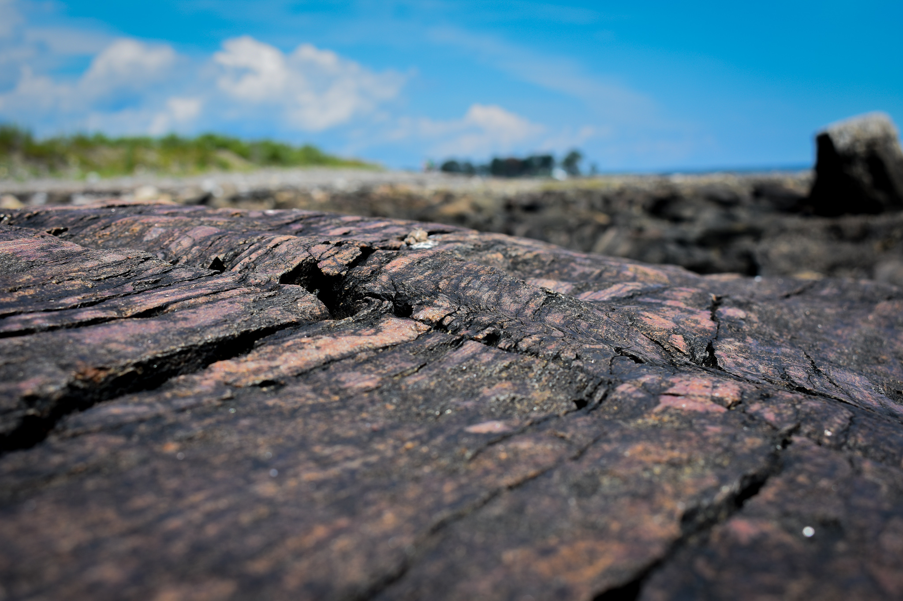
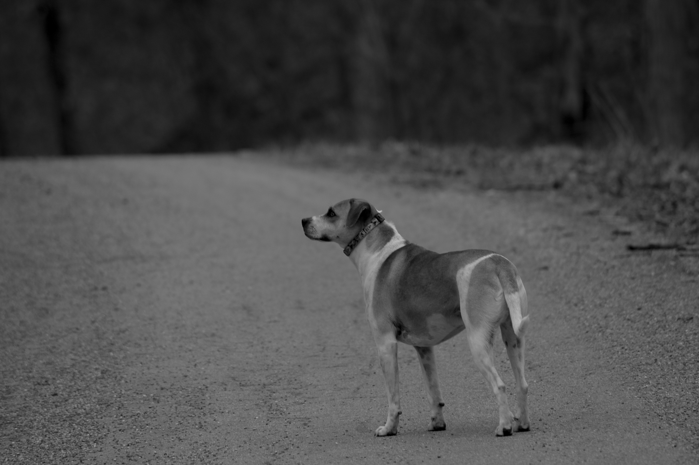
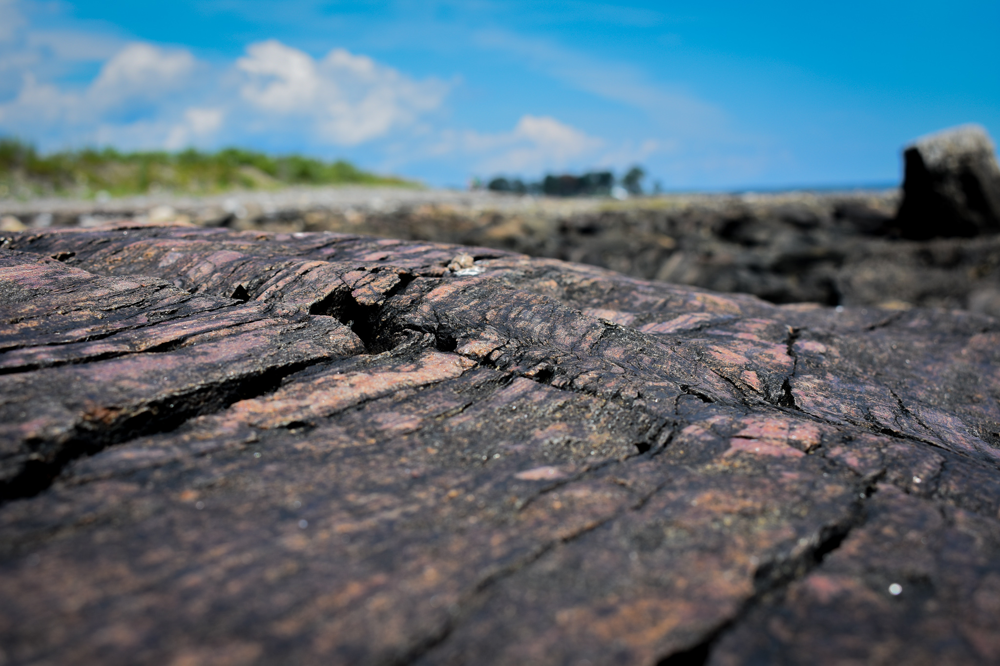
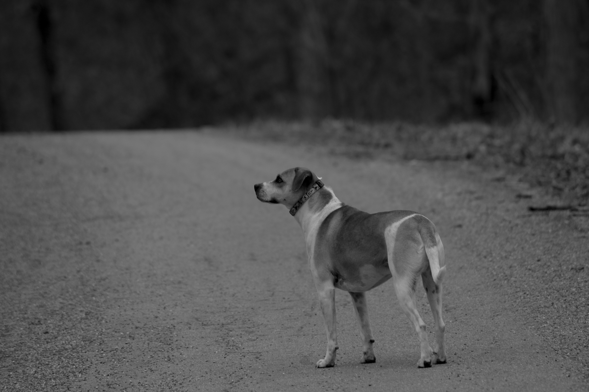

I began taking photos when I was around 11. I started on a little Nikon Coolpix that didn't take the best pictures, but it taught me a lot about the style I liked.
Since the beginning I've always enjoyed playing with the focus and depth of field to get some unique shots. It creates a more artistic photography style than the more traditional, commercial style.
For the most part, photography is just something I do for enjoyment. I especially love taking my camera with me when I travel and take unique snapshots of places I’ve been.

 


